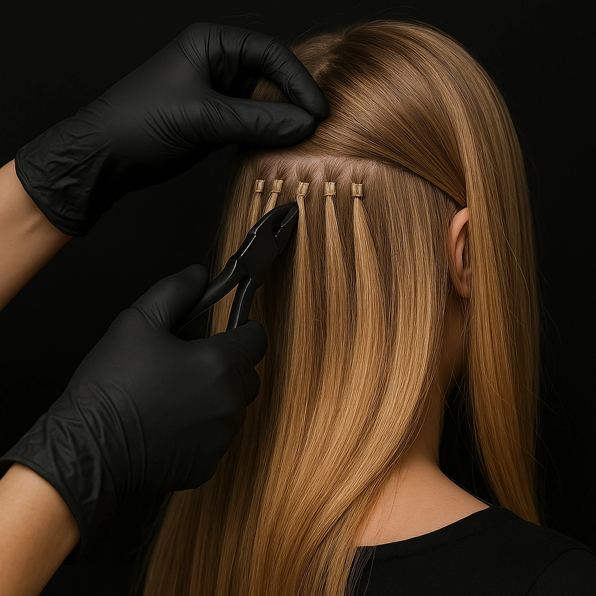

Снятие нарощенных волос требует особой аккуратности для сохранения здоровья ваших натуральных волос. Мы используем профессиональные составы, которые мягко растворяют капсулы, не повреждая волосяные луковицы и кожу головы. Результат - сохранение объема и блеска ваших собственных волос.
Стоимость:
- Снятие капсульного наращивания: 1500 ₽
- Снятие ленточного наращивания: 1800 ₽
- Комплексное снятие + уход: 2500 ₽
При записи онлайн — скидка 10% на все виды снятия!
Преимущества профессионального снятия
- Безопасность - специальные составы не повреждают натуральные волосы
- Сохранение объема - исключается вырывание собственных волос
- Отсутствие раздражения - мягкие растворы не травмируют кожу головы
- Экономия времени - процедура занимает всего 1-1.5 часа